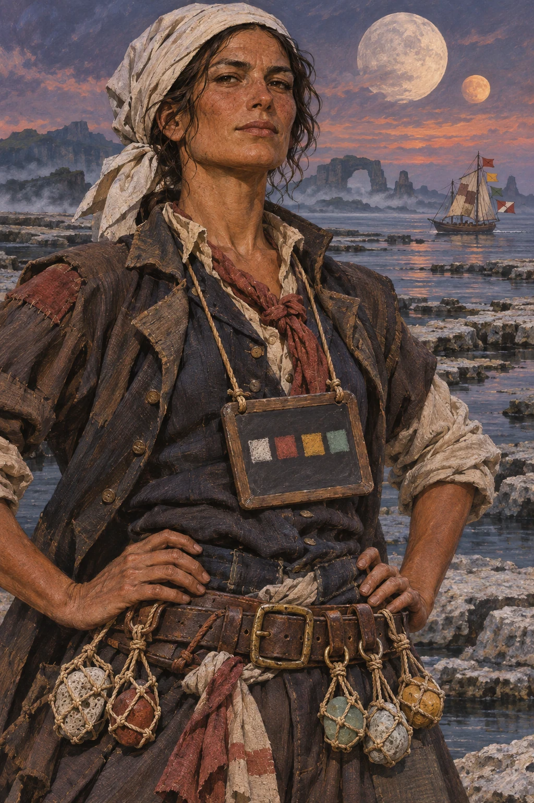

Взять на абордаж тендер „Ласка“ у Чаши: освободить рыбаков „Пескаря“, взять сигнальную книгу.
Филат ОбручЕвдокия Веш

Нэра Лоск
Если партия изменила план
Если к «Ласке» никто не причалил
Белая вода поднимает тендер и без героев. Покажите с их палубы, куда он уходит. Люк, бочка и штурманский ящик остаются в распоряжении команды тендера. Спросите караван, стоит ли его нагонять.
Шестой день Рыбного месяца, утро. Задняя бухта Чаши открыта только на полной воде, и «Складень» входит в неё по самой глубине, почти касаясь бортом скалы. Посёлок поднимается от воды по известняковым ступеням: белые дома, сушильни соли на террасах, сети на шестах. Над нижней террасой по скале тянется белая полоса засохшего ила, и рядом с ней в камне видны старые зарубки. На Чаше рассказывают, что эту черту оставила белая вода, которую застали деды.
На гальке ждут люди с узлами, лодки вытащены на берег и перевёрнуты днищами вверх. На террасах вяжут последние узлы в дорогу, и пахнет нагретой солью. В устье бухты, на виду у всех, стоит дозорный тендер под узким вымпелом с траурной лентой; на его корме выведено «Ласка». У его борта держат на швартове рыбацкий баркас «Пескарь», и на этом швартове блестит свинец. Над бухтой кричат чайки, а люди на гальке смотрят не на чаек и не на «Складень» — на тендер.
Подготовка и роли
Тревога — по правилам вечера 1. Ночью в сцене 3 приходит ранняя белая вода: до боя ведущий вслух «Тревога −1 — белый прилив». Бой «Абордаж „Ласки“» обязательный: выстрел +1; если матрос зажёг огневую бочку на Q5 — ещё +2 (сигнальный огонь). Пленных высаживают на Чаше под присмотр её людей — 0, к своим они вернутся только после вечера 8; отпущенные так, что вернутся к своим, — +1. Пикет Ряда, взятый в вечер 3, высаживают здесь же (0). Сцена 2 при 3+ — проверка дозора (пара катеров у входа в бухту); при 7+ в конце сцены 3 огни флагмана; при 9–10 вход в бухту днём — парус +1. Вода: задняя бухта — только на полной; на малой «Ласка» на грунте, к ней по осушке; ночью белая вода снимает её, над водой бель, флаги и огни дальше двух кабельтовых не видны. Команда «Ласки»: шкипер и матросы — 4/5/5/6 при 5/6/7/8 игроках; отряд с запада, команда с востока, шкипер выходит к мачте J5 и держит середину палубы; бочка Q5, люк G3, ящик L3; рыбаков шестеро, в трюме. Если в вечер 3 стол узнал метку вымпелов, Филат говорит о соли сам. Лодки Чаши уходят в Горло ночью с Нэрой. Итог: тихий стол 1, средний 4, шумный 7.
Прохор Фал — его кошка цепляет западный борт «Ласки»: отряд начинает бой на палубе, а не в шлюпке.
Руся Нагель первой идёт к люку на G3 и выводит рыбаков «Пескаря»; её топор бонусным действием рубит швартовы и лини, чтобы увести «Ласку» в бель.
Василиса Келп — шторный фонарь светит вниз и не считается огнём: при нём она поднимает рыбаков и упавших, а утром слушает Филата у белой черты.
Сцена 1 · 50 минут
Белая черта
Полная вода: только сейчас «Складень» проходит в заднюю бухту Чаши, на малой здесь сухо. Над нижней террасой по скале — белая полоса ила и старые зарубки; на полной её видно с воды. Филат Обруч стоит под ней с мерной рейкой, зелёные нити в бороде побелели от соли: «Вода до черты дошла при моём деде. В этот раз дойдёт выше». На гальке ждут люди с узлами — старики, матери, бочки воды; все смотрят на ваши лодки. В устье бухты тендер «Ласка» под узким вымпелом с траурной лентой; у её борта рыбацкий «Пескарь», на швартове свинцовая пломба с вымпелами. Филат: «Там шесть рыбаков. Мои соседи. Их взяли вчера с уловом». Евдокия Веш считает лодки на гальке, как волны: «Днём никто не уйдёт: тендер смотрит. Ночью — в Горло, лодками, все разом». Нэра Лоск кивает на мели у выхода: «Отмель пропустит малых. Больших — нет. Не спорь с водой». Судовая работа для лишних рук: люди Чаши — узлы и бочки воды на гальке к ночи. На мачте «Ласки» вымпел полощется, а на корме у неё что-то стоит под мокрой парусиной.
Выборы
Сказать Филату, что его соль продают под вымпелами (если стол знает), или спросить о ней.
Подняться с Филатом к черте и рассмотреть зарубки.
Спросить Филата, что он выбирает для себя.
Проверка и путь без броска
Мудрость (Проницательность) Сл 12 — Филат хочет остаться на верхней террасе: «Кто-то должен видеть, куда встанет вода». Без броска — спросить его, что он выбирает для себя. Улика («Белая черта на скале») не за броском: Филат показывает черту, с воды на полной её видят все. Если в вечер 3 стол узнал метку вымпелов, Филат сам: «Соль — наша. Её варили наши руки». При 9–10 вход в бухту днём — «Тревога +1 — замеченный парус».
Если не получилось
Филат молчит до ночи и говорит у черты сам, когда последние лодки уходят в бель: «Своих я отправил. Мне — на верхнюю террасу».
Сцена 2 · 50 минут
Ласка на грунте
Малая вода. Бухта обмелела, и «Ласка» легла на осушку с креном; к ней можно дойти по камням, мокрым и белым от соли. «Пескарь» лежит на иле рядом, пустой: рыбаков перевели в трюм тендера. На палубе «Ласки» шкипер со свистком и матросы с тесаками и крючьями; на корме, под парусиной, бочка с паклей и смолой, рядом огниво — огневая бочка, сигнальный огонь дозора. Племянник Филата, взрослый лодочник с мозолями от вёсел, садится у кромки и рисует палубу пальцем на песке: «Вчера носил им воду. Тут мачта. Тут люк, рыбаки под ним. Ящик с книгой — у штурвала. Бочка на корме». Филат стоит за ним: «Листок Ольгера не врёт: ночью вода придёт белая, раньше срока. Она её снимет». Евдокия Веш смотрит на тендер, как на погоду: «Днём не подойти. В бели подойдём к самому борту — и нас не увидят». Судовая работа для лишних рук: впередсмотрящий у входа в бухту — катера. При тревоге 3+ у входа в бухту стоит пара дозорных катеров: это проверка дозора.
Выборы
Разведать «Ласку» пешком по осушке: сосчитать команду, найти бочку, люк и ящик.
Ждать ночи и белой воды, не подходя: план по рисунку на песке.
Решить, кто первым поднимется на борт по кошке Прохора у западного борта.
При проверке дозора: спрятать шлюпку за обнажёнными камнями или стоять среди лодок Чаши.
Проверка и путь без броска
Ловкость (Скрытность) Сл 12 — разведчик проходит по осушке незамеченным и видит всё, что рисует племянник, и сколько людей на палубе. Без броска — рисунок на песке. Проверка дозора при 3+: Ловкость (Скрытность) группой Сл 12; без броска — шлюпка лежит за камнями, обнажёнными малой водой: катера на малой держатся фарватера. Провал — «Тревога +1 — замеченный парус».
Если не получилось
Разведчика видят: шкипер свистит и ставит матроса у огневой бочки — в бою «Абордаж „Ласки“» он начинает на Q5 (правило двух действий то же). Шкала не двигается: судно не замечено.
Сцена 3 · 50 минут
Абордаж «Ласки»
Белая вода — раньше срока, ночью: вода встаёт выше полной, со дна поднимается светлый ил, над бухтой бель, и флаги и огни дальше двух кабельтовых не видны. Ведущий вслух: «Тревога −1 — белый прилив». «Ласка» всплывает и выпрямляется. Шлюпка подходит к западному борту, кошка Прохора цепляет планширь — отряд начинает на палубе у западного борта, команда «Ласки» — у восточного, на корме: шкипер и матросы, четверо при пяти игроках, пятеро при шести и семи, шестеро при восьми. Начинается бой «Абордаж „Ласки“». До инициативы ведущий называет цели: не дать зажечь огневую бочку на Q5, открыть люк на G3, взять книгу из ящика на L3. Шкипер выходит к мачте на J5, держит середину палубы и дует в свисток: «Абордаж! Бочку, живо!» Матрос бьёт огнивом у бочки — в бели оно отсырело, искра не с первого раза. Из-под люка стучат рыбаки «Пескаря». Бой кончается, когда шкипер на половине хитов бросает ножи — «Хватит. Хватит, говорю» — или когда команда выбыла. Судовая работа для лишних рук: шлюпка у западного борта — принимать рыбаков из люка. В ящике у штурвала сигнальная книга, на мачте узкий вымпел «Ласки». Шкипер смотрит, как вы листаете книгу: «Я записал, что велели».
Выборы
До первого хода: кто держит бочку, кто идёт к люку, кто к ящику с книгой.
Пленных высадить на Чаше под присмотр её людей (0) или отпустить на шлюпке (+1).
Взять «Ласку» призом и оставить на мачте её же вымпел.
Прочесть строку книги при всех: Нэра сверяет её со своей доской.
Проверка и путь без броска
Проверки после боя нет: люк и ящик — действие на клетке в бою; если бой кончился раньше — без броска. Бочку зажигает матрос на Q5 двумя действиями подряд; урон между ними — заново. Тревога вслух: бой +1; бочка зажглась +2; отпустили +1. Книга («Ошибка сигнальщика»), строка прошлого, Сельдяного месяца: «День 3, вечер, восьмой час. Флагман: С-Б, Б-С. Через минуту спущено. Капитан флагмана велел записать: ошибка сигнальщика». Нэра без броска: «Синий над белым, белый над синим — „отменить утренний“. И вниз». При 7+ в конце сцены — огни флагмана.
Если не получилось
Если книгу не взяли в бою, она лежит в штурманском ящике после боя — без броска. Если бочка зажглась, бой идёт дальше: огонь уже виден, цели — люк и книга.
Белая черта на скале
Над нижней террасой Чаши по серому известняку тянется ровная белая полоса засохшего ила, выше человеческого роста. Рядом в камне выбиты старые зарубки, местами затёртые ладонями: сюда приходят смотреть на воду.
Что можно установить
Сорок лет назад, при деде Филата Обруча, белая вода дошла до этой черты. Большая белая вода дня 12 зайдёт на нижние террасы Чаши — тем, кто живёт на них, надо уходить до неё.
Получение
Вечер 4, сцена 1: Филат ведёт к скале и кладёт ладонь на черту: «Вода до черты дошла при моём деде. В этот раз дойдёт выше». Проверка не нужна.
Запасной путь
Черту видно с воды на полной: утром вечера 4 её замечает любой на палубе у задней бухты Чаши. Фома Слюда сличает ил на скале с илом в своём солемере.
Ошибка сигнальщика
Сигнальная книга тендера «Ласка» в клеёнчатой обложке: флажная азбука на первых листах, дальше записи сигналов по дням и часам.
Что можно установить
Строка книги: «Сельдяной, день 3, вечер, восьмой час. Флагман: С-Б, Б-С. Через минуту спущено. Капитан флагмана велел записать: ошибка сигнальщика». Сигнал отмены утреннего приказа остановил сам капитан Кречет.
Получение
Вечер 4, сцена 3: взять книгу из штурманского ящика «Ласки» (действие рядом с ящиком в бою) и открыть на третьем дне Сельдяного месяца. Если бой кончился раньше — книга лежит там же. Проверка не нужна.
Запасной путь
Доска Нэры несёт ту же строку. Шкипер «Ласки», сдавшись, на вопрос о третьем дне отвечает: «Я записал, что велели».
Изменения после решений
Если Огневая бочка «Ласки» зажглась. → Тревога +2 сразу: сигнальный огонь «Ласки» видели по всему рейду.
Если Команду «Ласки» высадили на Чаше под присмотр её людей. → Тревога 0. Вымпел «Ласки» обманывает дозоры: «чужой флаг» −1 раз за вечер в следующие вечера.
Если Команду «Ласки» отпустили. → «Тревога +1 — отпущенный пленный». Вымпел «Ласки» больше не обманывает дозоры: флотилия знает, что тендер взят.
Если Сигнальную книгу взяли. → Азбука и строка «ошибка сигнальщика» у экипажа: в вечер 5 по книге читают оборот листа Варвары без Нэры, на мачте Цепного Камня сигнал поднимают одним действием.
Если «Ласку» взяли призом. → Дальше её ведут двое людей Евдокии. В вечер 5 она стоит на глубокой воде за террасой «Сверки»: туда отступают, если «Складень» возьмут.
Завершение вечера
«Пескарь» с рыбаками и лодки Чаши уходят в бели к Солёному Горлу, Нэра на носу первой лодки; огней никто не зажигает. На мачте «Ласки» снова её же вымпел — теперь под вашей рукой. Филат стоит у белой черты с мерной рейкой и смотрит, как поднимается вода.